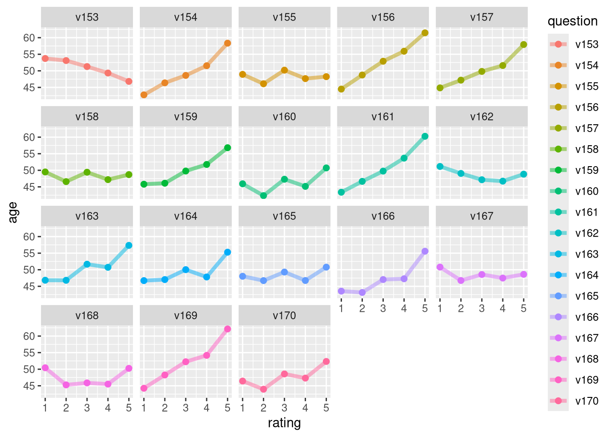
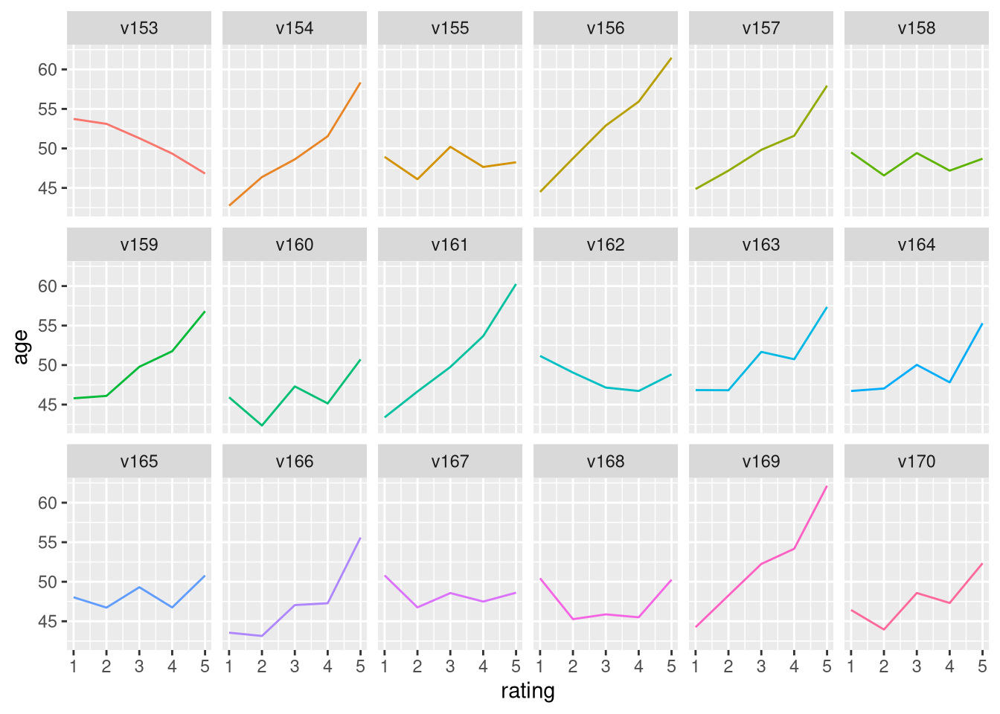
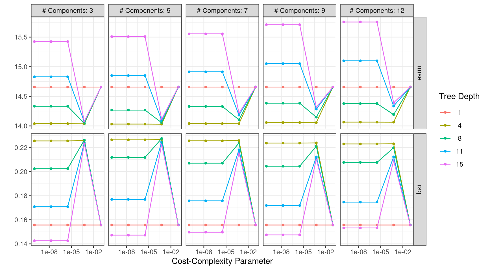
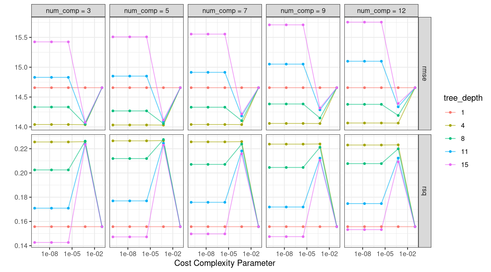
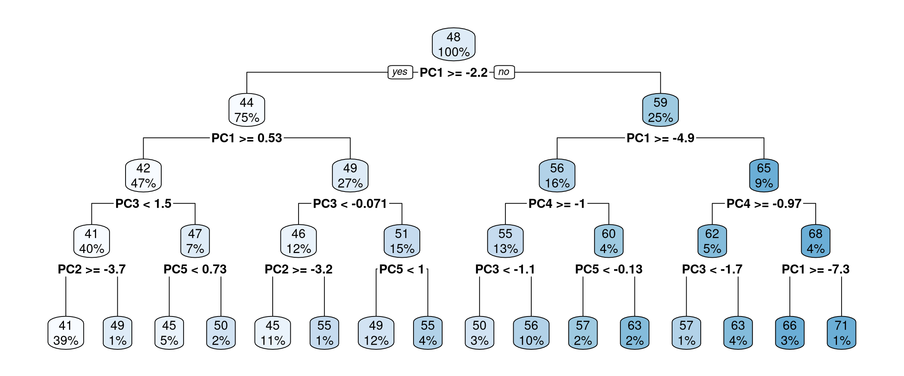
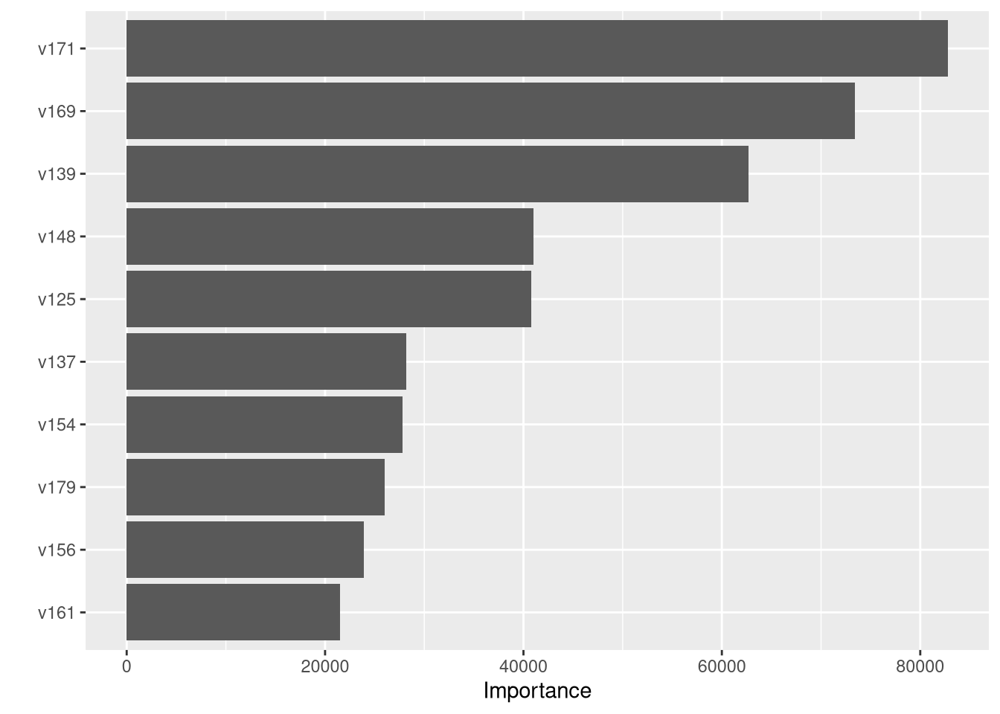

library(tidyverse)
library(tidymodels)
sisters67 <- read_csv("../Data/sisters.csv")But what do the nuns think?
This case study uses an extensive survey of Catholic nuns fielded in 1967 to once more put your practical machine learning skills to use. You will predict the age of these religious women from their responses about their beliefs and attitudes.
Surveying Catholic sisters in 1967
You have made it to the last case study of our course! 🎉 It is a particularly compelling one, where we are going to practice some advanced skills in modeling.
In 1967, a Catholic nun named Sister Marie Augusta Neal who had a PhD in sociology from Harvard fielded a survey of all members of Catholic women’s religious communities, i.e., nuns. It was a survey with over 600 questions that went out to over 130,000 individual sisters and was fielded in a time of significant change both for the Catholic church and society in general.
This survey is so big with so much data that we’re actually only giving you a subset, about one quarter of it, in your environment here during the case study. The whole survey is available online and it is pretty interesting, so I encourage you to take a look for yourself.
Conference of Major Superiors of Women Sisters’ Survey
- Fielded in 1967 with over 600 questions
- Responses from over 130,000 sisters in almost 400 congregations
- Data is freely available
There is demographic information in the survey, along with a lot of diverse kinds of questions. About 60 of the survey questions were agreement questions, with a statement (of some kind) that the survey asked the respondent to agree or disagree with on this scale. The answers are coded as integers from 1 to 5.
The integer 1 corresponds to “disagree very much” and 5 corresponds to “agree very much”. This kind of coding is convenient for our modeling purposes here. The data that you will have available within this case study is only this subset of the survey: the agree/disagree statements, plus age.
The original survey question asked for age in bins of 10 years, under 20, from 21 to 30, from 31 to 40, and so forth. I have recoded these as numeric values corresponding to the top of each age bin, 20, 30, 40, and so on. This means that this isn’t quite a continuous variable, since we haven’t measured these women’s ages very precisely, but we can do a pretty good job modeling it as if it is. There are more sophisticated modeling approaches possible with these kinds of measurements that you could explore.
These agreement questions on the survey are mostly social and religious in nature, focusing on what the respondent believes about society, the place of religion within the world, and her own role.
I do want to point out that this survey was fielded during the 1960s and there are some words used, for example for people of color, that are not used in professional or academic environments today. This is a historical dataset that we can approach and understand as centered in its context.
Opinions and attitudes in the 1960s
- “Catholics should boycott indecent movies.”
- “In the past 25 years, this country has moved dangerously close to socialism.”
- “I would rather be called an idealist than a practical person.”
In this case study, we are going to spend a bit more effort on exploratory data analysis. You are going to create a tidy version of the survey data with one row per observation.
In the original way the data is structured, there is one row per respondent with a separate column for each answer. After you tidy the data, using the function pivot_longer(), you will have one row for each combination of respondent and question, a much longer and skinnier dataset. This kind of tidy data structure is well suited to exploratory data analysis.
Let’s go learn something about Catholic nuns in the 1960s.
Choose an appropriate model
In this case study, you will predict the age of Catholic nuns from their answers on a survey fielded in 1967 focusing on questions about social and religious issues. What kind of model will you build? To predict a continuous, numeric quantity like age, use regression models.
Visualize the age distribution
The first step before you start modeling is to explore your data, and we are going to spend a little more time on this step in this last case study. To start with, check out the distribution of ages for the respondents in this survey. 📊 (Keep in mind throughout this case study that the data you have in your environment is one quarter of the real survey data.)
Instructions
- Call
glimpse()onsisters67to take a look at the structure of the data. Notice how many columns there are, and what their characteristics are.
# View sisters67
glimpse(sisters67)Rows: 19,278
Columns: 67
$ age <dbl> 60, 40, 30, 40, 70, 70, 30, 50, 30, 30, 60, 60, 50, 70, 30, 60,…
$ sister <dbl> 89986, 37950, 117200, 104452, 23709, 51361, 101419, 23722, 1016…
$ v116 <dbl> 5, 2, 4, 5, 5, 4, 5, 4, 4, 4, 4, 4, 5, 5, 4, 5, 4, 2, 4, 4, 2, …
$ v117 <dbl> 2, 1, 1, 4, 5, 4, 2, 1, 1, 1, 1, 2, 2, 1, 1, 3, 1, 2, 5, 1, 1, …
$ v118 <dbl> 3, 5, 5, 5, 5, 1, 4, 2, 2, 5, 3, 4, 1, 5, 4, 4, 4, 1, 1, 5, 5, …
$ v119 <dbl> 1, 5, 5, 4, 5, 1, 2, 1, 4, 4, 5, 3, 4, 5, 2, 4, 5, 4, 4, 5, 5, …
$ v120 <dbl> 5, 1, 4, 2, 5, 4, 1, 2, 5, 1, 1, 5, 1, 1, 2, 5, 4, 4, 5, 1, 1, …
$ v121 <dbl> 1, 4, 1, 4, 2, 1, 1, 5, 5, 1, 1, 5, 3, 1, 2, 4, 4, 4, 5, 4, 1, …
$ v122 <dbl> 1, 1, 3, 1, 4, 4, 1, 2, 1, 2, 1, 3, 1, 1, 2, 1, 1, 2, 1, 5, 3, …
$ v123 <dbl> 2, 5, 5, 3, 4, 4, 5, 5, 4, 5, 5, 3, 5, 5, 4, 3, 5, 5, 3, 5, 5, …
$ v124 <dbl> 1, 1, 1, 4, 4, 1, 1, 4, 2, 2, 3, 5, 1, 1, 1, 4, 4, 2, 4, 4, 2, …
$ v125 <dbl> 4, 5, 1, 2, 5, 1, 2, 5, 5, 4, 5, 5, 2, 5, 5, 5, 1, 4, 5, 5, 5, …
$ v126 <dbl> 1, 4, 1, 1, 5, 1, 1, 4, 2, 1, 3, 4, 1, 1, 1, 4, 1, 1, 5, 1, 1, …
$ v127 <dbl> 1, 2, 2, 2, 4, 2, 1, 4, 2, 4, 4, 4, 4, 1, 1, 5, 2, 4, 4, 4, 1, …
$ v128 <dbl> 5, 5, 1, 4, 4, 1, 5, 1, 4, 4, 4, 3, 2, 5, 2, 4, 2, 2, 3, 4, 1, …
$ v129 <dbl> 1, 5, 5, 5, 5, 1, 4, 5, 5, 1, 5, 3, 5, 5, 5, 4, 5, 5, 5, 4, 5, …
$ v130 <dbl> 5, 1, 1, 2, 2, 5, 1, 4, 2, 2, 1, 5, 1, 1, 2, 5, 4, 5, 4, 4, 1, …
$ v131 <dbl> 3, 4, 2, 4, 4, 3, 2, 3, 4, 4, 3, 3, 3, 4, 2, 2, 4, 4, 2, 4, 5, …
$ v132 <dbl> 5, 5, 4, 3, 5, 1, 5, 5, 5, 5, 5, 4, 5, 5, 5, 5, 5, 5, 4, 5, 1, …
$ v133 <dbl> 2, 4, 1, 2, 4, 1, 5, 2, 4, 1, 3, 3, 5, 1, 2, 4, 4, 4, 5, 4, 1, …
$ v134 <dbl> 3, 3, 4, 4, 2, 4, 3, 5, 3, 4, 3, 3, 5, 5, 4, 4, 5, 4, 3, 2, 5, …
$ v135 <dbl> 4, 2, 5, 3, 4, 1, 5, 5, 2, 4, 5, 2, 5, 5, 4, 4, 5, 5, 1, 5, 5, …
$ v136 <dbl> 1, 4, 2, 4, 2, 4, 4, 2, 2, 1, 3, 4, 1, 1, 4, 4, 4, 2, 1, 2, 1, …
$ v137 <dbl> 3, 2, 1, 2, 4, 5, 1, 5, 2, 1, 1, 2, 1, 1, 1, 2, 1, 1, 2, 1, 1, …
$ v138 <dbl> 5, 1, 1, 1, 2, 1, 1, 1, 1, 1, 2, 3, 1, 1, 1, 3, 1, 1, 1, 1, 1, …
$ v139 <dbl> 5, 1, 1, 2, 2, 5, 1, 4, 1, 1, 2, 5, 4, 1, 1, 2, 1, 1, 2, 1, 1, …
$ v140 <dbl> 5, 1, 1, 4, 4, 4, 1, 1, 2, 1, 1, 3, 1, 1, 4, 5, 1, 5, 5, 3, 4, …
$ v141 <dbl> 5, 5, 5, 4, 5, 4, 5, 5, 3, 3, 3, 2, 3, 5, 3, 2, 5, 5, 1, 5, 5, …
$ v142 <dbl> 3, 2, 1, 4, 2, 2, 4, 1, 2, 1, 3, 3, 3, 1, 2, 2, 1, 2, 1, 4, 1, …
$ v143 <dbl> 4, 5, 5, 3, 4, 1, 5, 4, 4, 5, 4, 3, 5, 5, 2, 5, 5, 4, 5, 5, 5, …
$ v144 <dbl> 1, 1, 1, 1, 1, 5, 1, 1, 1, 1, 2, 4, 1, 1, 1, 1, 5, 1, 1, 2, 1, …
$ v145 <dbl> 5, 5, 2, 4, 5, 5, 1, 4, 4, 2, 2, 5, 5, 1, 4, 5, 5, 1, 5, 4, 2, …
$ v146 <dbl> 3, 5, 4, 2, 5, 1, 1, 1, 4, 5, 4, 4, 4, 5, 5, 2, 5, 4, 5, 5, 5, …
$ v147 <dbl> 4, 4, 1, 2, 1, 4, 4, 4, 2, 3, 3, 1, 1, 1, 1, 2, 5, 1, 4, 3, 1, …
$ v148 <dbl> 1, 3, 1, 3, 2, 2, 1, 1, 3, 1, 3, 3, 3, 4, 3, 4, 1, 1, 1, 1, 1, …
$ v149 <dbl> 3, 2, 1, 4, 4, 4, 4, 4, 4, 2, 3, 3, 3, 1, 2, 2, 2, 4, 3, 4, 4, …
$ v150 <dbl> 4, 2, 1, 2, 2, 4, 2, 1, 2, 1, 5, 5, 2, 5, 1, 5, 1, 2, 4, 5, 3, …
$ v151 <dbl> 2, 5, 2, 4, 5, 5, 5, 4, 4, 2, 3, 4, 2, 5, 2, 5, 2, 4, 4, 4, 5, …
$ v152 <dbl> 3, 1, 1, 4, 4, 5, 4, 1, 2, 1, 3, 3, 1, 1, 1, 5, 1, 2, 5, 4, 1, …
$ v153 <dbl> 5, 5, 5, 1, 2, 4, 5, 4, 3, 5, 3, 1, 1, 1, 5, 5, 5, 5, 4, 4, 5, …
$ v154 <dbl> 5, 1, 1, 3, 5, 5, 2, 1, 4, 1, 3, 1, 5, 1, 1, 5, 4, 1, 5, 4, 1, …
$ v155 <dbl> 4, 3, 4, 5, 5, 1, 5, 4, 4, 4, 4, 3, 5, 5, 2, 5, 5, 5, 4, 5, 5, …
$ v156 <dbl> 4, 1, 1, 1, 4, 4, 1, 1, 1, 1, 2, 4, 1, 1, 1, 1, 5, 1, 1, 2, 1, …
$ v157 <dbl> 2, 2, 1, 2, 2, 5, 5, 5, 4, 1, 3, 3, 1, 1, 1, 5, 4, 1, 4, 5, 2, …
$ v158 <dbl> 3, 4, 4, 4, 5, 5, 2, 5, 4, 4, 3, 3, 4, 5, 4, 4, 3, 4, 5, 4, 3, …
$ v159 <dbl> 5, 2, 1, 2, 2, 5, 5, 3, 4, 1, 3, 3, 3, 1, 1, 2, 2, 1, 5, 1, 1, …
$ v160 <dbl> 3, 5, 4, 5, 5, 5, 5, 5, 5, 1, 3, 3, 5, 5, 5, 5, 5, 4, 4, 5, 4, …
$ v161 <dbl> 5, 4, 1, 2, 4, 1, 1, 3, 2, 1, 1, 2, 1, 1, 2, 5, 3, 2, 4, 1, 1, …
$ v162 <dbl> 2, 5, 5, 4, 4, 1, 5, 4, 5, 5, 3, 5, 5, 1, 4, 4, 4, 5, 3, 5, 5, …
$ v163 <dbl> 4, 1, 1, 4, 2, 1, 1, 1, 4, 1, 1, 5, 1, 1, 1, 5, 1, 1, 1, 4, 1, …
$ v164 <dbl> 4, 1, 1, 5, 2, 1, 1, 1, 4, 1, 4, 5, 1, 1, 4, 5, 1, 1, 4, 5, 1, …
$ v165 <dbl> 3, 4, 1, 1, 2, 4, 1, 5, 2, 1, 1, 3, 3, 1, 1, 3, 1, 2, 1, 1, 1, …
$ v166 <dbl> 5, 5, 1, 2, 2, 1, 2, 3, 3, 3, 3, 5, 4, 1, 4, 5, 4, 4, 5, 5, 4, …
$ v167 <dbl> 5, 1, 5, 4, 2, 1, 4, 3, 1, 4, 4, 4, 5, 1, 2, 4, 4, 4, 3, 4, 4, …
$ v168 <dbl> 3, 5, 5, 5, 5, 4, 5, 4, 5, 5, 5, 3, 3, 5, 4, 5, 5, 4, 2, 5, 3, …
$ v169 <dbl> 2, 1, 1, 4, 1, 1, 1, 4, 1, 1, 5, 5, 1, 5, 2, 1, 1, 2, 1, 1, 1, …
$ v170 <dbl> 5, 4, 3, 3, 4, 1, 1, 4, 4, 4, 3, 3, 5, 5, 4, 2, 4, 2, 4, 4, 4, …
$ v171 <dbl> 5, 2, 1, 5, 5, 1, 5, 1, 5, 4, 5, 5, 5, 5, 4, 5, 5, 4, 5, 4, 5, …
$ v172 <dbl> 5, 5, 5, 2, 2, 4, 5, 5, 5, 1, 5, 5, 2, 5, 2, 5, 5, 1, 5, 5, 2, …
$ v173 <dbl> 4, 4, 1, 2, 5, 1, 1, 5, 1, 4, 1, 3, 1, 1, 4, 1, 4, 1, 2, 1, 1, …
$ v174 <dbl> 3, 5, 1, 1, 4, 1, 5, 1, 3, 3, 3, 4, 5, 1, 4, 4, 4, 4, 5, 5, 5, …
$ v175 <dbl> 2, 2, 1, 4, 2, 5, 1, 3, 4, 1, 1, 5, 2, 1, 2, 5, 2, 4, 1, 1, 1, …
$ v176 <dbl> 3, 2, 1, 4, 4, 1, 5, 4, 3, 1, 3, 2, 4, 5, 4, 5, 5, 4, 5, 3, 1, …
$ v177 <dbl> 5, 4, 1, 5, 4, 5, 5, 5, 2, 1, 4, 2, 5, 5, 2, 5, 5, 4, 5, 4, 5, …
$ v178 <dbl> 1, 5, 2, 4, 4, 1, 1, 3, 4, 1, 4, 5, 1, 1, 4, 5, 5, 4, 5, 5, 2, …
$ v179 <dbl> 1, 4, 1, 5, 2, 5, 5, 1, 5, 1, 4, 5, 2, 4, 2, 5, 4, 1, 4, 4, 3, …
$ v180 <dbl> 4, 4, 2, 4, 2, 5, 4, 1, 3, 1, 3, 4, 2, 4, 4, 4, 4, 2, 2, 4, 4, …- Plot a histogram of
age.
# Plot the histogram
ggplot(sisters67, aes(x = age)) +
geom_histogram(binwidth = 10, color = "black", fill = "purple") +
theme_bw()
Tidy the survey data
Embracing tidy data principles is a powerful option for exploratory data analysis. When your data is tidy, you can quickly iterate in getting to know your data better and making exploratory plots. Let’s transform this wide data set into a tidy data frame with one observation per row, and then check out some characteristics of this subset of the original survey.
Using select()
There is a column called sister in this dataset that is an identifier for each survey respondent. We are removing this column in the exercise using select().
Instructions
- Use the
pivot_longer()function to transform the wide data set with each survey question in a separate column to a narrow, tidy data set with each survey question in a separate row.
# Tidy the data set
tidy_sisters <- sisters67 |>
select(-sister) |>
pivot_longer(-age, names_to = "question", values_to = "rating")- View the structure of this tidy data set using
glimpse().
# Print the structure of tidy_sisters
glimpse(tidy_sisters)Rows: 1,253,070
Columns: 3
$ age <dbl> 60, 60, 60, 60, 60, 60, 60, 60, 60, 60, 60, 60, 60, 60, 60, 6…
$ question <chr> "v116", "v117", "v118", "v119", "v120", "v121", "v122", "v123…
$ rating <dbl> 5, 2, 3, 1, 5, 1, 1, 2, 1, 4, 1, 1, 5, 1, 5, 3, 5, 2, 3, 4, 1…Next look at question agreement overall.
Instructions
Group by age and summarize the rating column to see how the overall agreement with all questions varied by age.
# Overall agreement with all questions varied by age
tidy_sisters |>
group_by(age) |>
summarize(rating = mean(rating, na.rm = TRUE))# A tibble: 9 × 2
age rating
<dbl> <dbl>
1 20 2.85
2 30 2.81
3 40 2.84
4 50 2.95
5 60 3.11
6 70 3.26
7 80 3.43
8 90 3.52
9 100 3.79- Count the
ratingcolumn to check out how many respondents agreed or disagreed overall.
# Number of respondents agreed or disagreed overall
tidy_sisters |>
count(rating)# A tibble: 5 × 2
rating n
<dbl> <int>
1 1 324374
2 2 210312
3 3 161765
4 4 277986
5 5 278633Exploratory data analysis with tidy data
You just created a tidy version of this survey data, which allows you to quickly ask and answer many different kinds of questions in exploratory data analysis.
You can easily see how many times survey respondents chose each option on the agreement scale with just one call to dplyr’s count() function.
We can see here that 1 was the most commonly chosen option; this corresponds to “disagree very much”. The options for disagree very much, agree very much, and agree somewhat are chosen much more often than the other two.
You can also check out how the overall answers to all survey questions vary with age. There were more statements on the survey that older respondents agreed with than statements younger respondents agreed with.
We can go a few steps further and dig into how the answers to individual questions depend on age. The code below first filters to a subset of questions on the survey, groups by these survey questions and the possible answers to them, and then calculates the mean age for each possible answer to each of the questions we’re considering.
tidy_sisters |>
filter(question %in% paste0("v", 153:170)) |>
group_by(question, rating) |>
summarise(age = mean(age)) |>
ggplot(aes(rating, age, color = question)) +
geom_line(alpha = 0.5, size = 1.5) +
geom_point(size = 2) +
facet_wrap(vars(question))
This is now getting closer to what we really care about and we can then pipe it to ggplot2 to make an exploratory plot to visualize these relationships. 📊 Figure 1 shows trends for a subset of the questions on the survey. Let’s talk through a few of them.
The first question in this plot, v153, slopes downward. This means that the more a respondent agreed with this statement, the younger she was. What was v153 on the survey? v153 was “People who don’t believe in God have as much right to freedom of speech as anyone else.” This item was a statement about support of freedom of speech, regardless of religious belief.
Other panels of this plot look different. v161, for example, slopes upward, which means that the more a respondent agreed with this statement, the older she was. What was this statement? v161 was “I like conservatism because it represents a stand to preserve our glorious heritage.” This item on the survey was a statement about identifying with conservatism and heritage.
Notice that some panels in the plot don’t slope up or down; there is no strong trend with age for some statements. Let’s look at v165; see how it is flat and we don’t see any trends up or down. v165 was “Catholics as a group should consider active opposition to US participation in Vietnam.” This statement was about the Vietnam War, which was in a pivotal period in 1967. There is no trend with age that we can see in this plot, meaning that we don’t see evidence here that younger or older Catholic nuns had different opinions about the United States involvement in the war.
These are the relationships that we want to build a machine learning model to understand and use for prediction. Exploratory data analysis is an important first step so that you as a machine learning practitioner understand something about your data and what your model will be capable of learning.
Once you have done that important exploration, you can build a very simple model and then create training and testing sets. 💫
In this case study, you are going to split the original data into three sets:
- training,
- validation, and
- test sets.
You’ve already used training and test sets throughout this course, and in this last case study we’re going to talk about how to use a validation set to choose a model. 🧐
In previous case studies, we used resampling to choose a model. Resampling lets you use your training data to create simulated datasets. These simulated datasets can help you learn which model is best without relying on performance metrics for the training set as a whole (which are overly optimistic) or the testing set (which can only be used one time at the very end of your analysis.)
If you have enough data, you may not need resampling at all and instead can divide your data into a training set, a validation set, and a testing set. Instead of computing performance metrics on resampled datasets, you can compute them for the validation set. This survey of nuns is quite large so we can create a validation set to use for choosing a model. You can think of a validation set as a single resample.
To split your data into three sets (training, validation, and testing), first make an initial_split() to split off your testing set from the rest. Then use the function initial_validation_split() to create what you can think of as a single resample of that data.
sisters_select <- read_csv("../Data/sisters.csv") |>
select(-sister)
set.seed(123)
sisters_splits <- initial_validation_split(sisters_select, strata = age)
sisters_other <- training(sisters_splits)
sisters_test <- testing(sisters_splits)
set.seed(123)
sisters_val <- initial_validation_split(sisters_other, strata = age)
sisters_val<Training/Validation/Testing/Total>
<6937/2313/2315/11565>Now it’s your turn to take your tidy dataset and practice exploring for yourself.
Visualize agreement with age
The tidied version of the survey data that you constructed is available in your environment. You have many options at your fingertips with this tidy data now. Make a plot that shows how agreement on a subset of the questions changes with age. 📉 In this exercise, we are using filter() to subset the data to just a subset of the questions on the survey to look at.
Instructions
Group by two variables,
questionandrating, so you can calculate an averageagefor each answer to each question.Summarize for each grouping to find an average
age.Choose the correct
geomto make a line plot.
# Visualize agreement with age
tidy_sisters |>
filter(question %in% paste0("v", 153:170)) |>
group_by(question, rating) |>
summarize(age = mean(age, na.rm = TRUE)) |>
ggplot(aes(rating, age, color = question)) +
geom_line(show.legend = FALSE) +
facet_wrap(vars(question), nrow = 3) 
Training, validation, and testing data
It’s time to split your data into different sets now. You’ve done this three times already in this course, but in this last case study we are also going to create a validation set. Using a validation set is a good option when you have enough data (otherwise, you can use resampling).
sisters_select <- read_csv("../Data/sisters.csv") |>
select(-sister)Instructions
Create two data partitions:
Specify one to split between testing and everything else.
Specify another one to split between validation and training.
# Split off the testing set
set.seed(123)
sisters_split <- initial_split(sisters_select, strata = age)
sisters_other <- training(sisters_split)
sisters_test <- testing(sisters_split)
# Create the validation split
set.seed(123)
sisters_val <- initial_validation_split(sisters_other, strata = age)
sisters_val<Training/Validation/Testing/Total>
<8672/2892/2893/14457>Using your validation set
This new validation set you just created will be used to compare models you have trained and choose which one to use. A validation test is used to compare models or tune hyperparameters.
Tune model hyperparameters
You have prepared training, validation, and test sets and now it’s time to build predictive models.
In this last case study, you are going to work with model hyperparameters for the first time in this course. Some model parameters cannot be learned directly from a dataset during model training; these kinds of parameters are called hyperparameters. 💥 Some examples of hyperparameters include the number of predictors that are sampled at splits in a tree-based model (we call this mtry in tidymodels) or the learning rate in a boosted tree model (we call this learn_rate).
Instead of learning these kinds of hyperparameters during model training, we can estimate the best values for these values by training many models on a resampled data set (like the validation set you just created) and measuring how well all these models perform. This process is called tuning.
You can identify which parameters to tune() in a model specification as shown here. Let’s build a decision tree model to predict age for our nuns, and tune the cost complexity and the maximum tree depth.
What is a model hyperparameter?
tree_spec <- decision_tree(
cost_complexity = tune(),
tree_depth = tune()
) |>
set_engine("rpart") |>
set_mode("regression")Model hyperparameters aren’t the only things you can tune. You can also tune steps in your preprocessing pipeline. This recipe has two steps:
First, this recipe centers and scales all those numeric predictors we have in this dataset, cataloging the nuns’ responses to the survey questions.
Second, this recipe implements principal component analysis on these same predictors. Except… this recipe identifies that we want to implement PCA and we aren’t sure how many predictors we should use. We want to choose the best 🏆 number of predictors.
sisters_recipe <- recipe(age ~ ., data = sisters_other) |>
step_normalize(all_predictors()) |>
step_pca(all_predictors(), num_comp = tune())You have a couple of options for how to choose which possible values for the tuning parameters to try. One option is to set up a grid of possible parameter values.
Here, we are using default ranges for cost complexity and tree depth, and we are going to try 3 to 12 principal components. When we set levels = 5, we are saying we want five levels for each parameter, which means there will be 125 (5 * 5 * 5) total models to try.
You can use the function tune_grid() to fit all these models; you can tune either a workflow or a model specification with a set of resampled data, such as the validation set you created (i.e. a single resample).
Grid of tuning parameters
grid_regular(num_comp(c(3, 12)),
cost_complexity(),
tree_depth(),
levels = 5)# A tibble: 125 × 3
num_comp cost_complexity tree_depth
<int> <dbl> <int>
1 3 0.0000000001 1
2 5 0.0000000001 1
3 7 0.0000000001 1
4 9 0.0000000001 1
5 12 0.0000000001 1
6 3 0.0000000178 1
7 5 0.0000000178 1
8 7 0.0000000178 1
9 9 0.0000000178 1
10 12 0.0000000178 1
# ℹ 115 more rowsYou train these 125 possible models on the training data and use the validation data to compare all the results in terms of performance. We won’t use the testing data until the very end of our modeling process, when we use it to estimate how our model will perform on new data.
Why three data partitions?
For some modeling use cases, an approach with three data partitions is overkill, perhaps a bit too much, but if you have enough data that you can use some of these powerful machine learning algorithms or techniques, the danger you face is underestimating your uncertainty for new data if you estimate it with data that you used to pick a model.
To get a reliable estimate from tuning, for example, you need to use another heldout dataset for assessing the models, either a validation set or a set of simulated datasets created through resampling.
Why three data partitions? Don’t overestimate how well your model is performing! 🙅
Next let’s build our model specification with tuning.
Instructions
Start by specifying that we want to train a decision_tree() model. Add the two parameters we want to tune, cost complexity and tree depth. Tune model hyperparameters.
This dataset of extensive survey responses from Catholic nuns in the 1960s is a great demonstration of all of these issues. You will use your validation set to find which values of the parameters (cost complexity, tree depth, and number of principal components) result in the highest R-squared and lowest RMSE. Notice here that we get the best results with a tree depth of 8 and 5 principal components.
As you work through the final set of exercises, you will see all of this come together, along with all the other practical predictive modeling skills we’ve explored in this course.
Identify tuning parameters
It’s time to build a modeling workflow() for this last dataset. We aren’t going to fit this dataset just once, but instead many times! We are going to use this workflow() to tune hyperparameters both in our model specification and our preprocessing recipe.
Instructions
Let’s start with our preprocessing tuning.
Add two preprocessing steps to this recipe, first to normalize and them to implement PCA.
Specify that we want to
tune()the number of principal components.
sisters_recipe <- recipe(age ~ ., data = sisters_other) |>
step_normalize(all_predictors()) |>
step_pca(all_predictors(), num_comp = tune())
sisters_recipe── Recipe ──────────────────────────────────────────────────────────────────────── Inputs Number of variables by roleoutcome: 1
predictor: 65── Operations • Centering and scaling for: all_predictors()• PCA extraction with: all_predictors()Next let’s build our model specification with tuning.
Instructions
Start by specifying that we want to train a
decision_tree()model.Add the two parameters we want to tune, cost complexity and tree depth.
tree_spec <- decision_tree(
cost_complexity = tune(),
tree_depth = tune()
) |>
set_engine("rpart") |>
set_mode("regression")
tree_specDecision Tree Model Specification (regression)
Main Arguments:
cost_complexity = tune()
tree_depth = tune()
Computational engine: rpart Finally, let’s put our recipe and model specification together in a workflow(), for ease of use.
Instructions
- First set up a
workflow()object. - Add the recipe to the
workflow(). - Add the model to the
workflow().
sisters_recipe <- recipe(age ~ ., data = sisters_other) |>
step_normalize(all_predictors()) |>
step_pca(all_predictors(), num_comp = tune())
tree_spec <- decision_tree(
cost_complexity = tune(),
tree_depth = tune()
) |>
set_engine("rpart") |>
set_mode("regression")
tree_wf <- workflow() |>
add_recipe(sisters_recipe) |>
add_model(tree_spec)
tree_wf══ Workflow ════════════════════════════════════════════════════════════════════
Preprocessor: Recipe
Model: decision_tree()
── Preprocessor ────────────────────────────────────────────────────────────────
2 Recipe Steps
• step_normalize()
• step_pca()
── Model ───────────────────────────────────────────────────────────────────────
Decision Tree Model Specification (regression)
Main Arguments:
cost_complexity = tune()
tree_depth = tune()
Computational engine: rpart Create a tuning grid
Let’s create a grid! 💃To tune our hyperparameters, we need a set of possible values for each parameter to try. In this case study, we’ll work through a regular grid of hyperparameter values.
Instructions
- Use the function
grid_regular()to create a grid of tuning parameters. - Add the function for the tree depth tuning parameter, after the cost complexity tuning parameter function.
tree_grid <- grid_regular(num_comp(c(3, 12)),
cost_complexity(),
tree_depth(),
levels = 5)
tree_grid |>
head() |>
knitr::kable()| num_comp | cost_complexity | tree_depth |
|---|---|---|
| 3 | 0 | 1 |
| 5 | 0 | 1 |
| 7 | 0 | 1 |
| 9 | 0 | 1 |
| 12 | 0 | 1 |
| 3 | 0 | 1 |
tree_grid |>
tail() |>
knitr::kable()| num_comp | cost_complexity | tree_depth |
|---|---|---|
| 12 | 0.0005623 | 15 |
| 3 | 0.1000000 | 15 |
| 5 | 0.1000000 | 15 |
| 7 | 0.1000000 | 15 |
| 9 | 0.1000000 | 15 |
| 12 | 0.1000000 | 15 |
Time to tune
set.seed(42)
sisters_res <- vfold_cv(sisters_other, v= 6, repeats = 2)
set.seed(123)
tree_res <- tune_grid(
tree_wf,
resamples = sisters_res,
grid = tree_grid
)
tree_res# Tuning results
# 6-fold cross-validation repeated 2 times
# A tibble: 12 × 5
splits id id2 .metrics .notes
<list> <chr> <chr> <list> <list>
1 <split [12047/2410]> Repeat1 Fold1 <tibble [250 × 7]> <tibble [0 × 4]>
2 <split [12047/2410]> Repeat1 Fold2 <tibble [250 × 7]> <tibble [0 × 4]>
3 <split [12047/2410]> Repeat1 Fold3 <tibble [250 × 7]> <tibble [0 × 4]>
4 <split [12048/2409]> Repeat1 Fold4 <tibble [250 × 7]> <tibble [0 × 4]>
5 <split [12048/2409]> Repeat1 Fold5 <tibble [250 × 7]> <tibble [0 × 4]>
6 <split [12048/2409]> Repeat1 Fold6 <tibble [250 × 7]> <tibble [0 × 4]>
7 <split [12047/2410]> Repeat2 Fold1 <tibble [250 × 7]> <tibble [0 × 4]>
8 <split [12047/2410]> Repeat2 Fold2 <tibble [250 × 7]> <tibble [0 × 4]>
9 <split [12047/2410]> Repeat2 Fold3 <tibble [250 × 7]> <tibble [0 × 4]>
10 <split [12048/2409]> Repeat2 Fold4 <tibble [250 × 7]> <tibble [0 × 4]>
11 <split [12048/2409]> Repeat2 Fold5 <tibble [250 × 7]> <tibble [0 × 4]>
12 <split [12048/2409]> Repeat2 Fold6 <tibble [250 × 7]> <tibble [0 × 4]>Visualize tuning results
Now that you have trained models for many possible tuning parameters, let’s explore the results.
Instructions
As a first step, use the function
collect_metrics()to extract the performance metrics from the tuning results and store the values intree_metrics.Arrange the results in
tree_metricsin ascending order ofrmsevalues.Use
show_best()ontree_resto verify the previous values.Use
autoplot()ontree_res.
tree_metrics <- tree_res |>
collect_metrics()
tree_metrics |>
filter(.metric != "rsq") |>
arrange(mean)# A tibble: 125 × 9
cost_complexity tree_depth num_comp .metric .estimator mean n std_err
<dbl> <int> <int> <chr> <chr> <dbl> <int> <dbl>
1 0.000562 4 5 rmse standard 14.0 12 0.0331
2 0.0000000001 4 5 rmse standard 14.0 12 0.0330
3 0.0000000178 4 5 rmse standard 14.0 12 0.0330
4 0.00000316 4 5 rmse standard 14.0 12 0.0330
5 0.000562 4 3 rmse standard 14.0 12 0.0349
6 0.000562 4 7 rmse standard 14.0 12 0.0336
7 0.0000000001 4 3 rmse standard 14.0 12 0.0347
8 0.0000000178 4 3 rmse standard 14.0 12 0.0347
9 0.00000316 4 3 rmse standard 14.0 12 0.0347
10 0.0000000001 4 7 rmse standard 14.0 12 0.0335
# ℹ 115 more rows
# ℹ 1 more variable: .config <chr>show_best(tree_res)# A tibble: 5 × 9
cost_complexity tree_depth num_comp .metric .estimator mean n std_err
<dbl> <int> <int> <chr> <chr> <dbl> <int> <dbl>
1 0.000562 4 5 rmse standard 14.0 12 0.0331
2 0.0000000001 4 5 rmse standard 14.0 12 0.0330
3 0.0000000178 4 5 rmse standard 14.0 12 0.0330
4 0.00000316 4 5 rmse standard 14.0 12 0.0330
5 0.000562 4 3 rmse standard 14.0 12 0.0349
# ℹ 1 more variable: .config <chr>autoplot(tree_res) +
theme_bw()
- Create a graph similar to the one created with
autoplot()usingggplot(). Specifically, putcost_complexityon the x-axis,meanon the y-axis and maptree_depthto thecoloraesthetic.
tree_metrics |>
mutate(tree_depth = factor(tree_depth),
num_comp = paste("num_comp =", num_comp),
num_comp = fct_inorder(num_comp)) |>
ggplot(aes(x = cost_complexity, y = mean, color = tree_depth)) +
geom_line(size = 0.5, alpha = 0.6) +
geom_point(size = 1) +
scale_x_log10() +
labs(x = "Cost Complexity Parameter",
y = "") +
facet_grid(.metric ~ num_comp, scales = "free") +
theme_bw() 
Find the best parameters
You just visualized the tuning results, but you can also select the best set of tuning parameters and update your workflow() with these values.
Instructions
- Use the function
select_best()to extract the hyperparameters with the lowest RMSE from the tuning results.
best_tree <- tree_res |>
select_best(metric = "rmse")
best_tree# A tibble: 1 × 4
cost_complexity tree_depth num_comp .config
<dbl> <int> <int> <chr>
1 0.000562 4 5 pre2_mod17_post0- Pipe the original workflow object to
finalize_workflow()with that best decision tree as an argument, to update it.
final_wf <- tree_wf |>
finalize_workflow(best_tree)
final_wf══ Workflow ════════════════════════════════════════════════════════════════════
Preprocessor: Recipe
Model: decision_tree()
── Preprocessor ────────────────────────────────────────────────────────────────
2 Recipe Steps
• step_normalize()
• step_pca()
── Model ───────────────────────────────────────────────────────────────────────
Decision Tree Model Specification (regression)
Main Arguments:
cost_complexity = 0.000562341325190349
tree_depth = 4
Computational engine: rpart Use the testing data
We haven’t touched the testing data throughout this analysis, but here at the very end, we can come back to it and estimate how well our model will perform on new data. If all has gone well, our performance metrics such as RMSE will be about the same as from the validation set, indicating that we did not overfit during our tuning procedure. Let’s use the last_fit() function to fit to the entire training set and evaluate on the testing set.
Instructions
- Fit to the training set and evaluate on the testing set using
last_fit().
final_tree <- final_wf |>
last_fit(sisters_split)
final_tree |>
extract_fit_engine() |>
rpart.plot::rpart.plot()
age- Access the performance metrics for the testing set using
collect_metrics().
final_tree |>
collect_metrics() |>
knitr::kable()| .metric | .estimator | .estimate | .config |
|---|---|---|---|
| rmse | standard | 13.9608510 | pre0_mod0_post0 |
| rsq | standard | 0.2341628 | pre0_mod0_post0 |
Wrapping up
You tuned model hyperparameters for a decision tree (cost complexity and tree depth) along with the number of components to use in PCA for data preprocessing. The resulting decision tree (shown in Figure 2) exhibits some sensible behavior, with the first principal component being the variable for the first split, etc.
The performance metrics you achieved on the testing set indicate that you did not overfit during the tuning process.
You divided your data into three subsets: a training set to train your model, a validation set to tune hyperparameters, and then a testing set to evaluate the performance of your model and estimate how it will do with new data.
You can also use a validation set to choose between different models.
This analysis was just the final example in the series of predictive projects you approached in this course.
You learned how to go from raw data to exploring that data to training models to evaluating those models using the tidymodels metapackage and important tools for exploratory data analysis from the tidyverse ecosystem, like dplyr and ggplot2.
Diverse data, powerful tools
- Fuel efficiency of cars 🚗
- Developers working remotely in the Stack Overflow survey 💻
- Voter turnout in 2016 🗳
- Catholic nuns’ ages based on beliefs and attitudes ⛪
In this course, I’ve chosen to spend our energy and time on some of the issues that I have found to be the most important and most impactful from my real world, practical predictive modeling experience. These include knowing what to do when you are faced with class imbalance, having some options in your toolkit for resampling approaches, and optimizing model hyperparametrs.
Practical machine learning
- Dealing with class imbalance
- Measuring performance with resampling (bootstrap, cross-validation)
- Tuning hyperparameters
To keep going in your machine learning journey, check out the resources at tidymodels.org. This site is a central location for resources and documentation for tidymodels packages, and there is a ton to explore and learn. 🚀
There are five articles at Get Started that guide you through what you need to know to use tidymodels, and many more resources at Learn.
The high level takeaways that you should remember from this course are first, that each time you have a new predictive modeling problem you are working on, you need to try out multiple different kinds of models. You don’t know ahead of time which kind of model is going to perform best. This paper uses some super interesting analysis to show that most often, the two kinds of models that perform best are gradient tree boosting and random forest.
However, depending on how much data you have and the specifics of your problem, that may not be true, so you have to try it for yourself. Also, start with a simple model to compare to.
Practical machine learning
- Try out multiple modeling approaches for each new problem.
- Overall, gradient tree boosting and random forest 🌳 perform well.
And perhaps most importantly, never skip exploratory data analysis when you build machine learning models. It is time well spent, because when you understand a data set better, you can do a better job of building accurate models that perform better.
And that’s our ultimate goal here! Thanks for spending time with me on this course. Now it’s time for you to take what you’ve been practicing here and go apply it in the real world.
Can a random forest do better?
ranger_spec <- rand_forest(mtry = tune(),
min_n = tune(),
trees = 500) |>
set_mode("regression") |>
set_engine("ranger",
importance = "impurity")
ranger_specRandom Forest Model Specification (regression)
Main Arguments:
mtry = tune()
trees = 500
min_n = tune()
Engine-Specific Arguments:
importance = impurity
Computational engine: ranger ranger_recipe <- recipe(formula = age ~ ., data = sisters_other) |>
step_normalize(all_predictors())
ranger_recipe
ranger_workflow <- workflow() |>
add_recipe(ranger_recipe) |>
add_model(ranger_spec) set.seed(8675309)
ranger_tune <-
tune_grid(ranger_workflow, resamples = sisters_res, grid = 25)
ranger_tune# Tuning results
# 6-fold cross-validation repeated 2 times
# A tibble: 12 × 5
splits id id2 .metrics .notes
<list> <chr> <chr> <list> <list>
1 <split [12047/2410]> Repeat1 Fold1 <tibble [50 × 6]> <tibble [0 × 4]>
2 <split [12047/2410]> Repeat1 Fold2 <tibble [50 × 6]> <tibble [0 × 4]>
3 <split [12047/2410]> Repeat1 Fold3 <tibble [50 × 6]> <tibble [0 × 4]>
4 <split [12048/2409]> Repeat1 Fold4 <tibble [50 × 6]> <tibble [0 × 4]>
5 <split [12048/2409]> Repeat1 Fold5 <tibble [50 × 6]> <tibble [0 × 4]>
6 <split [12048/2409]> Repeat1 Fold6 <tibble [50 × 6]> <tibble [0 × 4]>
7 <split [12047/2410]> Repeat2 Fold1 <tibble [50 × 6]> <tibble [0 × 4]>
8 <split [12047/2410]> Repeat2 Fold2 <tibble [50 × 6]> <tibble [0 × 4]>
9 <split [12047/2410]> Repeat2 Fold3 <tibble [50 × 6]> <tibble [0 × 4]>
10 <split [12048/2409]> Repeat2 Fold4 <tibble [50 × 6]> <tibble [0 × 4]>
11 <split [12048/2409]> Repeat2 Fold5 <tibble [50 × 6]> <tibble [0 × 4]>
12 <split [12048/2409]> Repeat2 Fold6 <tibble [50 × 6]> <tibble [0 × 4]>ranger_tune |>
select_best(metric = "rmse") -> ranger_best
ranger_best# A tibble: 1 × 3
mtry min_n .config
<int> <int> <chr>
1 22 3 pre0_mod09_post0final_rwf <- ranger_workflow |>
finalize_workflow(ranger_best)
final_rwf══ Workflow ════════════════════════════════════════════════════════════════════
Preprocessor: Recipe
Model: rand_forest()
── Preprocessor ────────────────────────────────────────────────────────────────
1 Recipe Step
• step_normalize()
── Model ───────────────────────────────────────────────────────────────────────
Random Forest Model Specification (regression)
Main Arguments:
mtry = 22
trees = 500
min_n = 3
Engine-Specific Arguments:
importance = impurity
Computational engine: ranger final_ranger_fit <- final_rwf |>
fit(data = sisters_test)
augment(final_ranger_fit, new_data = sisters_test) |>
metrics(truth = age, estimate = .pred) -> R1
R1 |>
knitr::kable()| .metric | .estimator | .estimate |
|---|---|---|
| rmse | standard | 4.9937351 |
| rsq | standard | 0.9541711 |
| mae | standard | 4.0733559 |
What variables were important in the random forest?
vip::vip(final_ranger_fit)